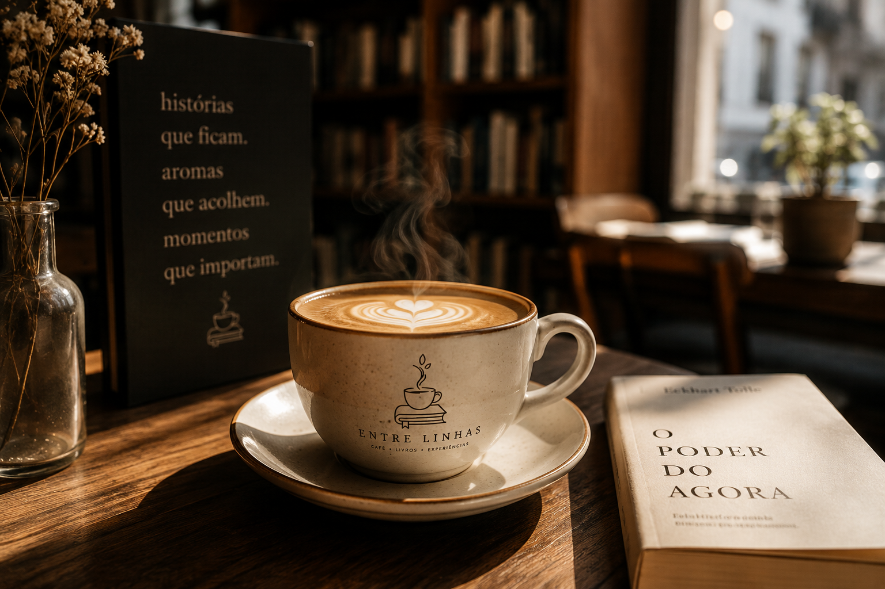
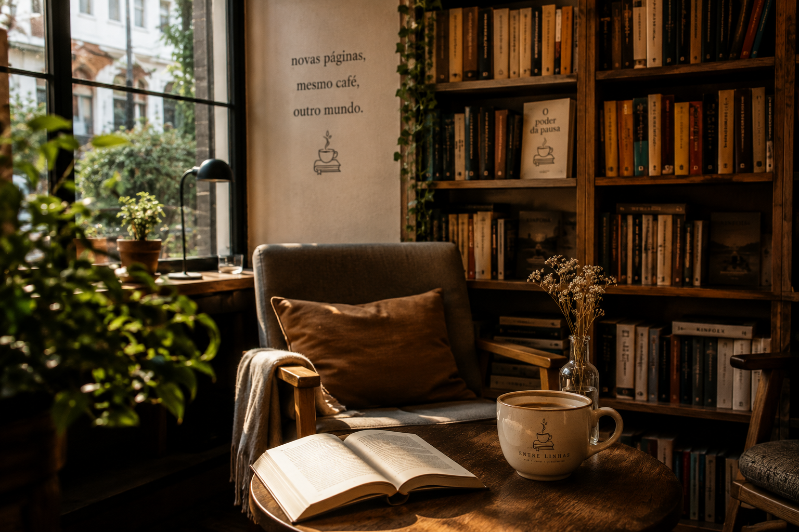
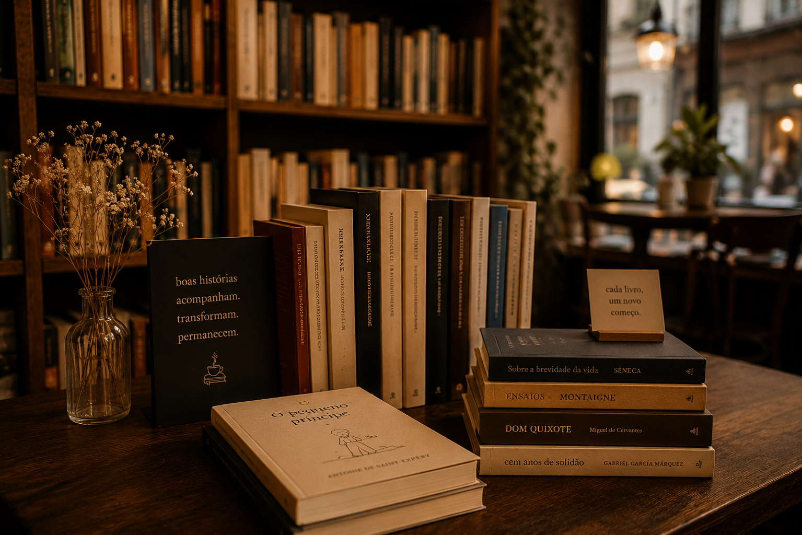

Entre Linhas — onde histórias ganham sabor!
A Entre Linhas é um espaço criado para quem aprecia a beleza das pequenas pausas: o aroma de um café recém-passado, o som delicado das páginas sendo viradas e a tranquilidade de um ambiente feito para acolher.
Com uma atmosfera elegante, confortável e intimista, o local reúne o prazer da leitura com a experiência de uma boa cafeteria.
Por aqui, você encontra livros de diferentes gêneros e autores, cantinhos aconchegantes para ler, mesas para estudar ou escrever e uma seleção de cafés, bebidas quentes e acompanhamentos artesanais.
Na estante, uma nova história espera por você. No balcão, uma xícara fumegante convida a ficar. Entre uma página e outra, talvez você encontre exatamente aquilo que não sabia que estava procurando.
Entre Linhas: um lugar para descobrir livros, saborear momentos e deixar o tempo passar.

Um café para acompanhar sua história.
Entre o aroma intenso do café recém-passado e o silêncio confortável das páginas abertas, a Entre Linhas convida você a desacelerar.
Cada xícara chega acompanhada de uma experiência: o calor suave da bebida, a textura delicada da espuma e aquele perfume envolvente de grãos torrados que preenche o ambiente.
Em meio às estantes de livros, à madeira e à luz acolhedora, o café se transforma em um pequeno ritual.
É o lugar para começar o dia com calma, mergulhar em uma boa história, encontrar inspiração ou simplesmente apreciar alguns minutos longe da pressa.
Na Entre Linhas, café e literatura se encontram para criar momentos que permanecem.
Um lugar para ler, respirar e se perder nas páginas.
Na Entre Linhas, a leitura encontra o cenário perfeito para acontecer sem pressa.
Um espaço tranquilo e acolhedor, cercado por estantes de livros, madeira natural e uma iluminação suave que convida a permanecer.
Sente-se, escolha um livro e deixe o tempo passar. Enquanto o aroma do café recém-preparado envolve o ambiente, as páginas ganham outro ritmo — mais lento, mais íntimo, mais seu.
Seja para descobrir uma nova história, estudar, escrever ou simplesmente aproveitar alguns minutos de silêncio, a Entre Linhas oferece um refúgio onde livros, café e tranquilidade se encontram.
Porque algumas histórias merecem ser lidas devagar.


Livros e autores.
Na Entre Linhas, cada livro é uma porta entreaberta para outros mundos, outras vidas e outras formas de enxergar o cotidiano.
Reunimos obras de diferentes épocas, estilos e vozes, porque acreditamos que a literatura não possui apenas um caminho.
Há romances que aquecem como uma xícara de café recém-passado, poesias que chegam silenciosas e permanecem por muito tempo, contos que despertam memórias e histórias que nos fazem olhar para o mundo com novos olhos.
Por trás de cada livro existe um autor, uma sensibilidade e uma maneira única de transformar pensamentos em palavras.
Na Entre Linhas, gostamos de pensar que escolher um livro é também escolher uma companhia.
Aqui, os livros não são apenas objetos nas estantes. São encontros.
Entre uma página e outra, talvez você encontre uma história. Entre uma história e outra, talvez encontre um pouco de si.